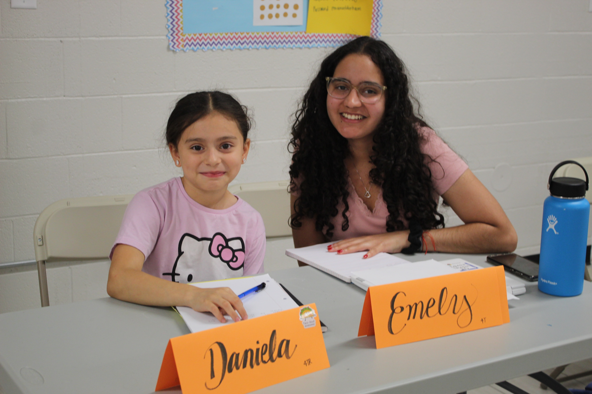
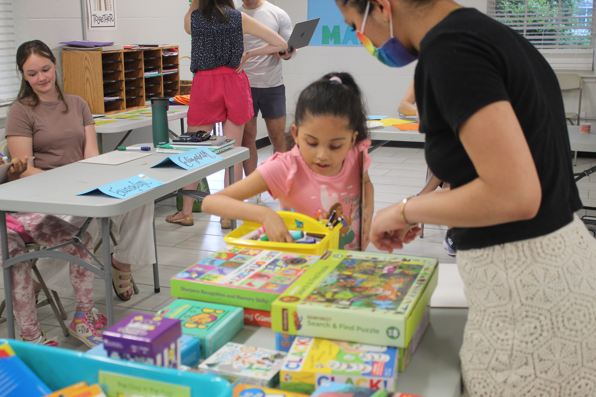
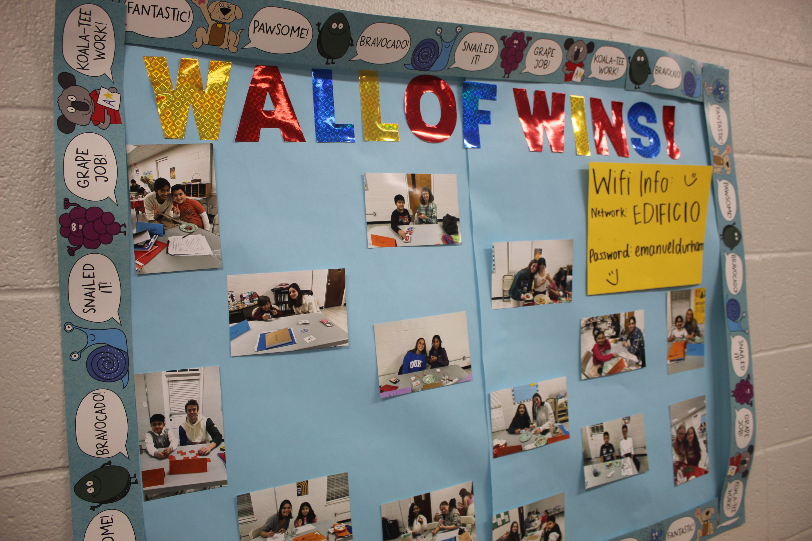
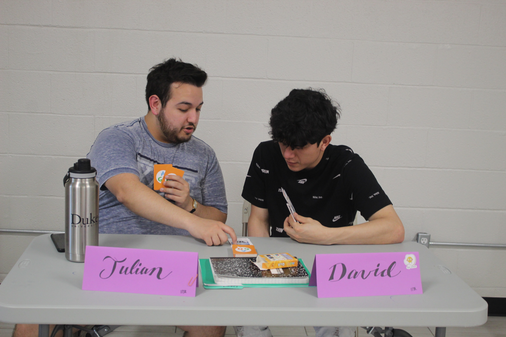
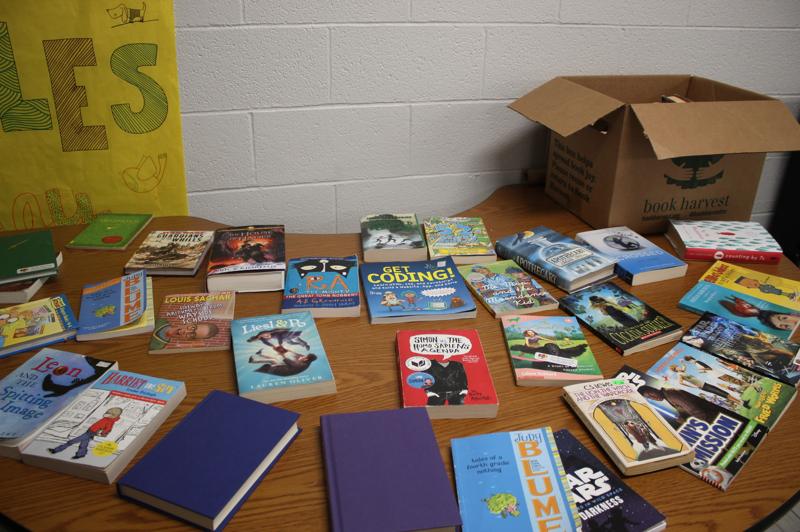
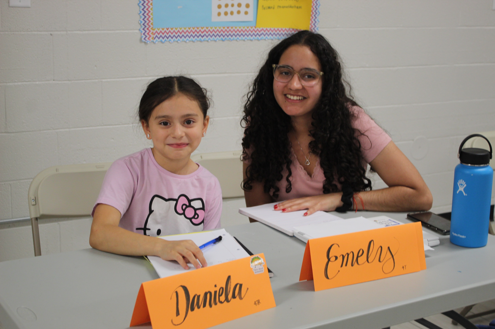
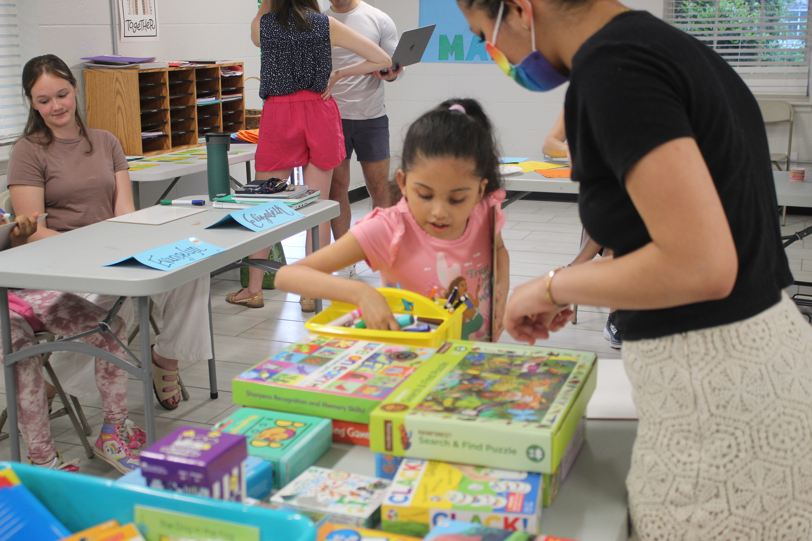
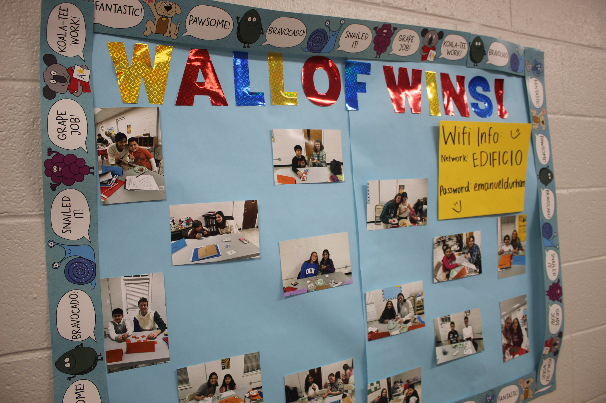
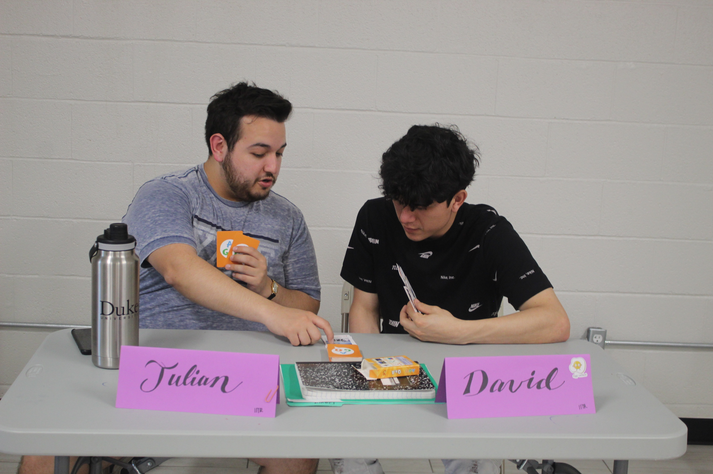
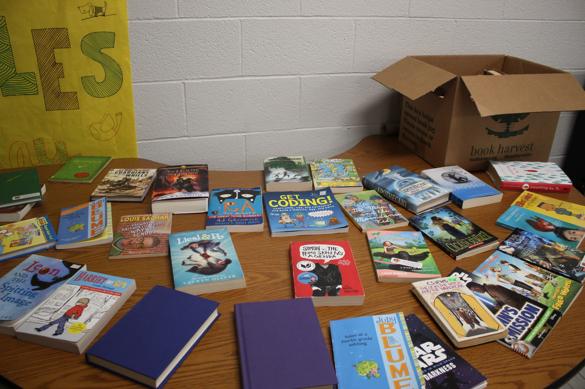

Tutoring Services
If your child would like to be part of the Emanuel Learning Center, we would love to have them! We welcome students who are in kindergarten-12th grade. Students may come on Tuesdays or Thursdays, or preferably both days. Every student will be paired with a tutor. Tutors are volunteers from the community. Some are college students, some are teachers at local schools, and some come from other professions. All of them are excited about working with students and helping them learn!
We ask that all students who come are able to make a consistent commitment to the program and attend regularly. Because our tutors are volunteers, we want to make sure they can depend on their student coming. We ask the same commitment of our tutors. The relationship between the student and the tutor is at the heart of the program, so we ask that everyone be present as much as possible!
Students do not need to bring homework or other school supplies when they come to tutoring.
We will try to accommodate as many students as we can, but are limited by the number of tutors who are available. When you apply, we will let you know if there is a space for your child (or children), or if they are on the waitlist. We will do our very best to keep you updated and to get your child paired with a tutor as soon as we can.
Student Application 








